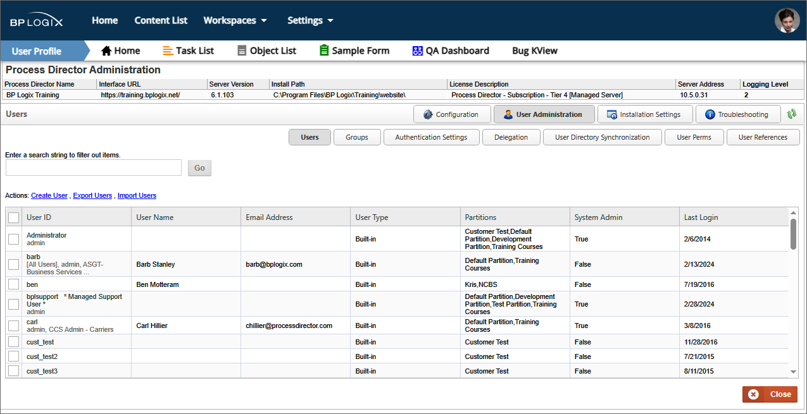
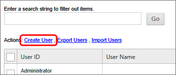
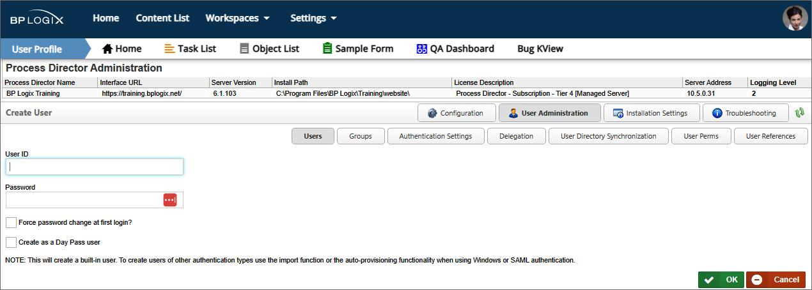
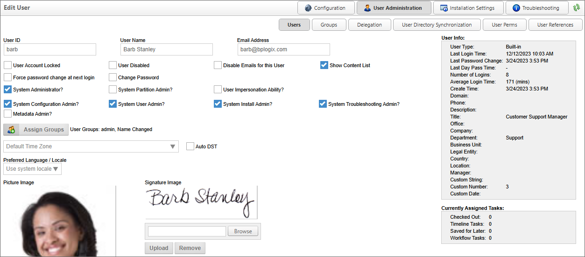
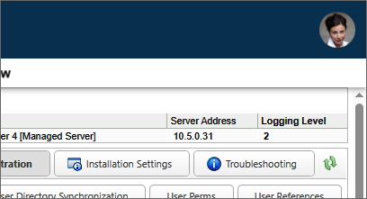
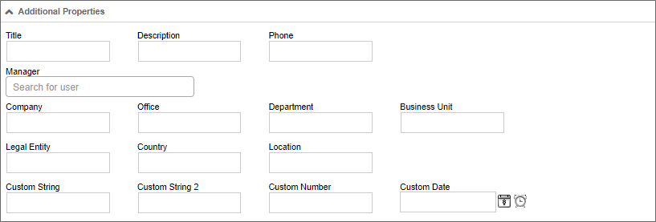

In many cases, Process Director will return a comma-separated list of users. Since the users are identified by UserName, we strongly recommend that your users names do not include commas as part of the user name.
In many cases, Process Director will return a comma-separated list of users. Since the users are identified by UserName, we strongly recommend that your users names do not include commas as part of the user name.Process Director users are created and managed from the Users page of the User Administration section.
The Users page displays a list of users on the system.

Systems with a large number of users, i.e., more than 100, will see a search box at the upper left corner of the page to search for specific users via User ID. For Process Director v5.44.800 and higher, the search box will, when a value is entered, search all user attributes that are displayed in the User List, such as Group names, to return the matching users, as an improvement to this search feature.
This section describes how to add users to Process Director using built-in user accounts. This isn't required for users that are created by Windows SSO, synchronization with your LDAP server, or an external authentication system (SAML).
For built-in users, a User ID and password must be added to the Process Director database before a login can occur. When a user is configured in the Process Director database, additional information such as the user’s email address and alias can be configured.
On the Users page of the

This screen enables you to specify the new user to add to the Users list.

Enter the user’s User ID and Password. You can force the user to change his password upon login. Click OK when done. After you create the user, you can click on the “Edit” link next to the user’s name and configure it further.
The User ID will also serve as the user’s login user name for Process Director. BP Logix highly recommends that administrators ensure that User ID’s are unique to each user. This may not be possible, however, when using SAML authentication for existing users where duplicate user names exist. In this case the SAML authentication must send a unique GUID or identifier for the users. There is a variable in the custom vars file called fAuthSAMLAllowDuplicateUserIDs that must be set to “true” to allow this behavior.
In many cases, Process Director will return a comma-separated list of users. Since the users are identified by UserName, we strongly recommend that your users names do not include commas as part of the user name.

To set the user’s account properties, click on the Edit hotlink in the user's row of the user list. The Edit User configuration will display, with the User ID and Password fields already configured. you may configure the remaining user properties.
Enter an email address that will be associated with the user in the Email Address field. You can change the password by checking the Change Password box; an input field will appear prompting for a new password. Click OK to save the configuration.
Additional check boxes enable you to configure the following settings:
| SETTING |
DESCRIPTION |
|---|---|
| User Account Locked | Prevents the user from logging in, but does not disable the user account. This setting may be automatically applied if the user fails to enter their login credentials properly after a specified number of tries. This setting applies primarily to Built-In users. |
| User Disabled | Disables the user account, preventing the user from participating in any tasks, and deleting the user's participation from any existing tasks. |
| Disable Emails for this User | Prevents Process Director emails from being sent to the user. |
| Show Content List | For Process Director v6.1 and higher, this property gives users access to the new Content List menu. While the Content List menu is visible by default to system administrators, non-administrative users must have this property checked in order to see it. |
| User Account Locked | Locks the account, preventing the user from logging in. (This feature is implemented only for “built-in” user account authentication. It doesn't apply to LDAP, SAML, or Windows user accounts.) |
| Force password change at next login | Force the user to change their password on the next login attempt. |
| Change Password | When checked, a text box will appear that enables you to enter a new password for the user. |
| Mobile App User | This setting appears only for installations that are licensed for the Mobile Application Component, with the appropriate mobile app custom variables configured properly. Checking this property indicates that the user will be granted access to the Mobile Application. |
| Mobile Admin User | This setting appears only for installations that are licensed for the Mobile Application Component, with the appropriate mobile app custom variables configured properly. Checking this property indicates that the user will be granted access to the Mobile Server as an administrator. |
If Mobile App User or Mobile Admin User are checked, the users will automatically be imported into the Mobile Application server as users with the appropriate levels of access. Only Mobile Admin Users can access the administrative UI of the mobile server, and only Mobile App Users will be granted access to the Mobile Application on their mobile device. A user who is both an app and admin user will need to have both properties checked.
These settings enable you to grant the user different types of administrative privileges. You can grant users the following privileges by checking the corresponding checkboxes:
| ADMIN TYPE |
DESCRIPTION |
|---|---|
| System Administrator | The top-level Administrative user, with complete control of the Process Director Installation |
| System Partition Admin | This user type isn't technically a system administrator, and has no access to the IT Admin area of the installation. Users who are designated as system partition administrators, however, have full access to the Content List for the partitions to which they are a member, and have permission to create, edit, and delete all objects, irrespective of the Content List permissions that have been set in that Partition. |
| System Configuration Admin | A subset of the System Administrator user with access only to the Configuration tab. |
| System User Admin | A subset of the System Administrator user, with access only to the User Administration tab. |
| System Install Admin | A subset of the System Administrator user, with access only to the Installation Settings tab. |
| System Troubleshooting Admin | A subset of the System Administrator user, with access only to the Troubleshooting tab. |
| User Impersonation Ability | The ability for this user to impersonate other users. |
| Metadata Admin | Enables a user to access the Meta Data Administration section. |
You can assign the user to Process Director user groups by clicking the Assign Groups button. When you click the button, the Group Selector will open.

From the list box on the left, select the user group(s) to which you'd like to assign the user, then click the  button, which will move the group names over to the list box on the left.
button, which will move the group names over to the list box on the left.
To remove the user from a group, select the group from the list box on the left, then click the  button to remove the group.
button to remove the group.
 When adding users to a group, the fStartUsersAddedToGroup custom variable determines whether the new user will be assigned to any running tasks that are assigned to that group.
When adding users to a group, the fStartUsersAddedToGroup custom variable determines whether the new user will be assigned to any running tasks that are assigned to that group.
This dropdown control enables you to select the user's Time Zone. You can also allow Process Director to set the time zone to Daylight savings time automatically, by checking the Auto DST check box.
You can set the appropriate language for the user, or select the default system language, by choosing it from this dropdown. The use of languages other than English will require that Process Director be localized for each additional language.
A picture of each user can be uploaded to Process Director. The image will appear in the user profile page for each user. It will also be displayed in the upper right corner of the page in Process Director v6.1, as the avatar for the User Profile menu.

You may upload the image by clicking on the Browse button to find and select the image. Once the image is selected, clicking the Upload button will upload the signature image to Process Director. Acceptable image formats include GIF, JPG, and PNG images.
Process Director can imprint an electronic signature in all routing slips for a user. If you have an image of the user's signature, you may upload the image by clicking on the Browse button to find and select the image. Once the image is selected, clicking the Upload button will upload the signature image to Process Director. Acceptable image formats include GIF, JPG, and PNG images.
This user picker enables you to delegate another user to perform this user's tasks. For more information on user delegation, please see the User Delegation topic.
This user picker enables you to replace the current user with a selected user. This isn't a delegation. Instead, the current user will be completely replaced by the selected user in all assigned tasks, e.g., any task where the replaced user is specifically identified as the task assignee.
This replacement function will not replace the original user in any historical data, however, so an original user who was the original Timeline Initiator will still be listed as such. Similarly, if the original user is assigned a task via a user picker on a Form field, or from a Business Rule, the Replace user function will NOT replace the original user in those objects, either. For these reasons, we recommend that you immediately disable the account for the original user. When you do so, this will likely result in future tasks with assignments made via Form or Business Rule going into an error state when the original user is assigned if the Form or Business Rule isn't also edited when the original user is replaced.
The Replace User function isn't a panacea for user replacement. All it can do is try to make replacing a user easier than it would otherwise be.
For User of Process Director v3.78 and higher, additional properties can be set for users. The Additional Properties section contains a number of text boxes to set these properties.

| PROPERTY |
DESCRIPTION |
|---|---|
| Title | A text box for the user's Title. |
| Description | A text box for a Description. |
| Phone | A text box for the user's phone number. |
| Manager | A UserPicker to choose the user's Manager. |
| Company | A text box for the user's Company. |
| Office | A text box for the user's Office name. |
| Department | A text box for the user's Department. |
| Business Unit | A text box for the user's Business Unit. |
| Legal Entity | A text box for the user's Business Entity. |
| Country | A text box for the user's Country. |
| Location | A text box for the user's Location. |
| Custom String | A text box for a custom string value. |
| Custom String 2 | A text box for a custom string value. |
| Custom Number | A text box for a custom numeric value. |
| Custom Date | A DatePicker for a custom date value. |